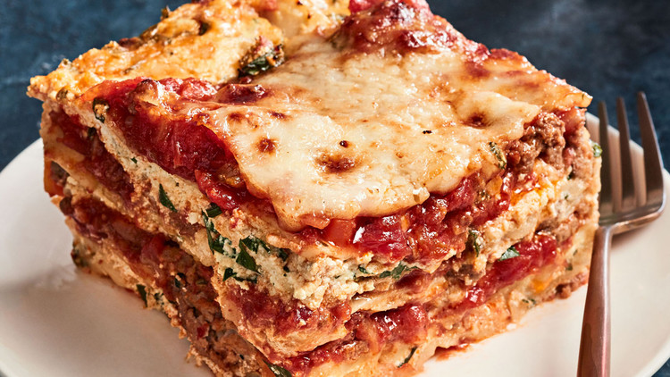

Lasagna

Lasagna with Meat Sauce
Ground beef and sweet Italian sausage enrich the sauce for this beloved baked pasta,
while no-boil lasagna noodles speed up the process.
Ingredients
Meat Sauce
- 3 tablespoons extra-virgin olive oil
- 33/4 pound 85-percent lean ground beef
- 33/4 pound sweet Italian sausage, removed from casing
- 31 medium onion, chopped (1 1/2 cups)
- 32 carrots, peeled and chopped (3/4 cup)
- 32 celery stalks, chopped (3/4 cup)
- 3Kosher salt
- 36 garlic cloves, minced (2 tablespoons)
- 32 teaspoons dried oregano
- 31/2 teaspoon red-pepper flakes
- 33 tablespoons tomato paste
- 32 cans (28 ounces each) whole peeled tomatoes in juice
Cheese Mixture
- 24 ounces whole-milk ricotta (3 cups)
- 1 cup whole milk
- 3 large eggs
- 4 ounces Parmigiano-Reggiano, finely grated (1 1/4 cups)
- 1 pound low-moisture mozzarella, shredded (4 cups)
- 3/4 cup chopped flat-leaf parsley
- Kosher salt and freshly ground pepper
Steps
- Preheat oven to 375 degrees.
- Meat Sauce: Heat oil in a large saucepan over medium-high. Add beef, sausage, onion, carrots, celery, and 1 teaspoon salt. Cook, stirring occasionally and breaking up meat into bite-size pieces, until vegetables soften and meat has browned, about 10 minutes. Add garlic, oregano, and red-pepper flakes; cook until fragrant, 1 minute. Add tomato paste; cook 2 minutes more. Puree tomatoes in a blender or food processor; add to pan. Bring to a boil, then reduce heat to low and simmer, stirring occasionally, until reduced and thickened slightly but still very loose, about 15 minutes. Remove from heat.
- Cheese Mixture: In a large bowl, whisk together ricotta, milk, eggs, 1 cup Parmigiano-Reggiano, 2 1/2 cups mozzarella, parsley, 1 teaspoon salt, and 1/4 teaspoon pepper.
- Assembly: Spread 2 cups meat sauce evenly in a 9-by-13-inch baking dish, preferably ceramic or enameled cast iron. Arrange 3 lasagna noodles over sauce (space noodles evenly; they will expand as the lasagna cooks). Spread 2 cups cheese mixture over noodles; top with 3 more noodles. Repeat layering of meat and cheese mixtures between noodles twice more. Spread 2 cups meat sauce evenly over top layer of noodles. Sprinkle evenly with remaining 1 1/2 cups mozzarella and 1/4 cup Parmigiano-Reggiano. Loosely cover with parchment-lined foil and transfer to a rimmed baking sheet.
- Bake until noodles are tender but still al dente (easily pierced with the tip of a knife), 40 to 45 minutes. Uncover; continue baking until bubbly and puffed slightly along edges and golden brown in places on top, 20 to 25 minutes more. (There may appear to be a lot of liquid in the dish. It will be absorbed as the lasagna cools.) Transfer dish to a wire rack and let cool slightly and set, about 20 minutes; cut into squares to serve.